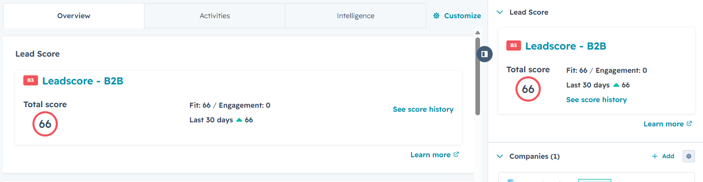
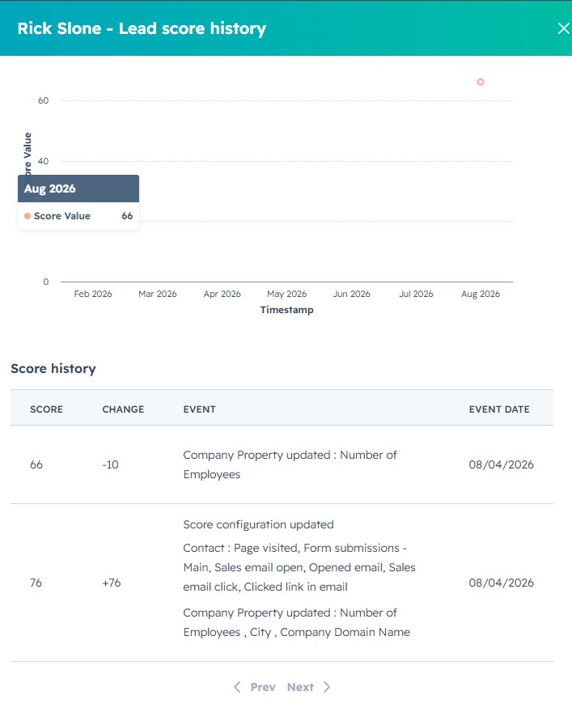
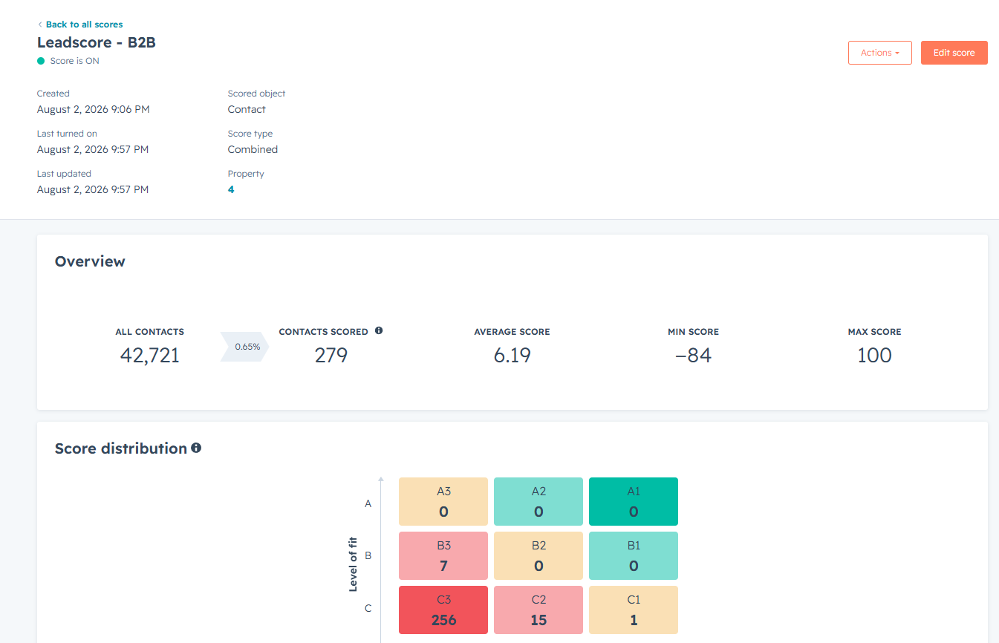
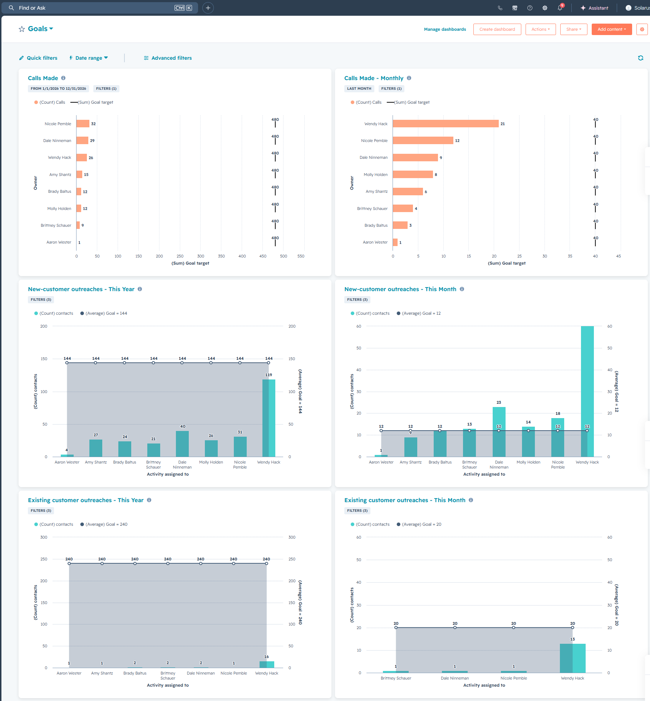
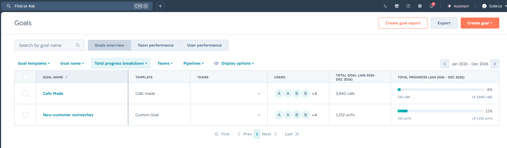

When a new lead is created, the system notifies the CSR team. After manual assignment, the sales rep receives a task and email notification. Automated follow-ups escalate if the lead goes inactive.
Step 1
Lead is created. An automated notification goes to sales@solarus.net to alert CSRs
Step 2
CSR assigns the lead to a sales rep
Manually. The rep receives an email notification and a HubSpot task
Step 3
If 48 hours pass with no activity (note, call, or email): automated reminder email sent to the sales rep to update the lead
Step 4
If still no activity after 72 hours: automated email sent to CSR to re-assign the lead
CSR re-assigns manually or contacts the rep
Note: Same process applies to inactive leads that have been in the pipeline for 96 hours or more with no activity.
Automation 2
Quote Follow-up Automations
After a quote is sent to a customer, the system creates tasks and sends notifications at key intervals. If the quote is not accepted within 45 days, the deal moves to closed lost automatically.
Step 1
Quote is sent. If it is not accepted after 48 hours, a task and an email are assigned to the sales rep to follow up
Step 2
7 days after the quote was sent with no acceptance: another task and notification sent to the rep
Step 3
30 days with no acceptance: another task and notification sent to the rep
Step 4
At 42 days: CSR team receives a notification to review the deal
If not moved, deal auto-closes as lost after 3 more days (day 45)
Closed lost deadline: If the deal stage is not updated by day 45 with no quote acceptance, HubSpot automatically moves the deal to Closed Lost.
How to work leads and opportunities in HubSpot
End-to-end walkthrough, from the moment a lead is assigned to you through converting it into a deal and creating a quote.
1Receive the lead notification
When a new lead is assigned to you, you will receive a HubSpot email notification. Open the email and click View in HubSpot to go directly to the record.
2Lead starts in the "New" stage
In HubSpot, the lead will usually start in the New stage. This means the opportunity has been assigned, but no outreach has been made yet.
3Review the lead record before taking action
You will be able to see:
The lead stage
The lead owner
The contact linked to the lead
Any previous activity
4Use the three main actions from the lead record
From the lead record, there are three main actions you will use:
Make a phone call
Create an email
Create a note
5Call the lead via 3CX
To call the lead, click Make phone call and use the Call via 3CX option.
6Email the lead from HubSpot
To email the lead, click Create an email. HubSpot will open the email composer with your signature already included.
7Create internal notes
To leave internal context, create a note. This is useful for adding details about conversations, next steps, or anything relevant.
8Turn notes into follow-up tasks
If needed, turn the note into a follow-up task. For example, if the contact asks you to call back in two business days, you can write that in the note and also create a task at the same time.
9Move the lead through stages
As you continue outreach, move the lead through the correct lead stages. For example, from New to Second Attempt.
10Convert the lead into a deal
Once the opportunity becomes more qualified, convert the lead into a deal.
11Complete the deal fields
When creating the deal, complete the key fields:
Deal name
PipelineSales Pipeline
Deal stageNew Opportunity
Deal owner
Deal type
Expected close dateif known
Amountif known
Some fields can be left blank if the information is not available yet.
12Access the deal record
After the deal is created, you can access it from:
The lead record
The Deals area in HubSpot
CRM → Deals
13Manage the deal
In the deal record, you can continue managing the opportunity by:
Logging notes
Logging calls
Sending emails
Reviewing related activity
Creating a quote when the opportunity is ready
14Create a quote
When it is time to send pricing, go to the right sidebar in the deal record and click Add under Quotes. This is where the quote creation process begins.
Important Notes
Leads are for earlier-stage opportunities that still need outreach and qualification. Deals are for warmer opportunities where the conversation is moving forward and quoting may be needed. Always keep notes and follow-up tasks updated so nothing gets missed.
II
Quoting Process
How to create a quote in HubSpot
Step-by-step guide to building, reviewing, and sending quotes from the deal record.
1Open the deal and add a quote
Open the deal you want to quote. In the right sidebar, go to Quotes and click Add.
2Confirm contact and company details
Confirm the contact included in the quote. Click Next. Your user details and Solarus company details should already be filled in. Click Next again.
3Add products from the library
In Review line items:
Click Select from product library
Search and choose the products needed
Click Add
4Review and adjust line items
Adjust as needed:
Quantity
Unit discount in % or $
Subscription term
Delete any item added by mistake
5Review subtotal and add extras
If needed, add a one-time discount, fee, or tax.
6Skip Payment schedule for now
Leave it off and click Next.
7Set up e-signature
Select HubSpot e-signature
Make the customer contact the required signer
Do not add a countersigner unless needed
Keep payment collection off
Note
The required signer does not need a verification method, so another person can sign on their behalf if needed.
8Select the correct quote template
Make sure the template is: B2B | Solarus Default New Edits, 03.26
9Add quote name, expiration and terms
Add the quote name, update the URL slug if needed, and set the expiration date. Add extra purchase terms using Insert Snippet if needed.
Warning
Do not add terms already built into the template.
10Review the final preview
Check products, subtotal, terms, and signature. Click Create.
11Go to quote and send it
Click Go to quote, then Write email with quote.
12Compose and send the email
Update subject, write message, insert quote link, and send.
Important Notes
Always create quotes from the deal record. Use the product library for services and fees. The customer receives the quote link, signs, and submits.
How to clone and update a quote in HubSpot
When a customer asks for changes to an existing quote, clone it and update instead of starting from scratch.
1Open the deal with the original quote
In the right sidebar, go to Quotes.
2Find the quote and clone it
Click the three dots next to the quote and select Clone.
3Review and update the cloned quote
Update line items:
Click Add line item and select From product library
Add new products or services
Remove items using Actions > Delete
4Review total and e-signature
Review new total. Keep e-signature on if needed.
5Rename the quote
Rename clearly: Updated Version, Revised Quote, or Quote v2.
6Review expiration date and purchase terms
Change expiration date if needed. Terms should carry over.
7Create and send the updated quote
Click Create and send the new quote to the customer.
When to use Clone
Use Clone when the new quote is mostly the same as the original and only needs small updates.
III
Sales Workspace & Tasks
How to use the Sales Workspace in HubSpot
Your daily hub for managing leads, deals, tasks, and activity.
1Go to Sales > Sales Workspace
Bookmark this page for quick daily access.
2Use the Summary section
Manage leads, deals, tasks, calendar, and activity in one place.
3Review your Tasks first
All pending tasks
Task types (to-dos, calls)
Filters: Due today, Overdue, Due tomorrow
4Click Start tasks
HubSpot takes you to the related record to complete the action.
5For each task, choose the right action
Complete if done
Add a note for context
Reschedule if needed
6Call directly from the task
If a phone number is available, call directly, add notes, move on.
7Check Suggested tasks
HubSpot shows recommended next steps based on recent activity.
8Review stalled deals
Deals with no activity in 14 days. Review and reactivate.
9Use the Schedule section
View calendar and tasks together in calendar or list view.
10Check your Insights
Calls made
Emails sent
Email replies
Lead status
Pipeline activity
11Use the Activity Feed
Email opens
Link clicks
Booked meetings
Form activity
12Review your Leads
Switch to My leads to focus on your own records.
13Review your Deals
Switch to My deals to review active opportunities.
14Use saved views in Tasks
Organize by type, such as quote-related tasks only.
15Use the Dashboard
Tasks past due
Inactive prospects
Deals by stage
Quotes sent
Best Practices
Start your day in Sales Workspace. Review tasks first. Use My leads and My deals. Update records as you go. Check activity feed and dashboard regularly.
IV
3CX Calling
Install the 3CX extension
Chrome
1Open Chrome
Go to the 3CX Click2Call page in the Chrome Web Store.
2Add to Chrome
Click Add to Chrome, review permissions, click Add extension.
3Confirm installation
Click Extensions icon, look for 3CX Click2Call. Pin it.
Edge
Install from the Microsoft Edge Add-ons store.
1Open Edge
Go to the 3CX Click2Call page in Edge Add-ons.
2Install
Click Get, review permissions, confirm.
3Confirm
Check Extensions icon for 3CX Click2Call.
Alternative for Edge
Install the Chrome version in Edge. Click Allow extensions from other stores, then Add to Chrome.
How to call from HubSpot using 3CX
Make sure 3CX extension is installed and active.
1Option 1: Call from a lead or contact
Open the record
Click Call or Make a phone call
Select Call phone number via 3CX
3CX opens with the number ready
Click call button
2Option 2: Call from a deal
Open the deal
Click the associated contact
Click phone number, select Call via 3CX
Important
Do not use HubSpot's default calling. Always use Call phone number via 3CX.
Extra Tip
In 3CX you can search HubSpot contacts by name. Synced contacts show as CRM results.
V
Log Emails & Using Templates
How to send and log emails from HubSpot
Use HubSpot for follow-up emails. Keeps communication tracked with templates, meeting links, scheduling, and tracking.
1Open the record
Send from a lead, deal, or contact record.
2Open the email composer
HubSpot opens a pop-up to write and send directly from the record.
3Use an email template
Templates save time. Some use dynamic fields like the contact's first name.
4Review and edit
Update subject, body, dynamic text, and signature.
5Add a meeting link
Insert a HubSpot meeting link directly into the email.
6Attach a file
Upload from computer or choose from HubSpot.
7Format the email
Links, bold, italics, font, bullets, alignment.
8Add CC/BCC and follow-up task
Add CC/BCC. Create a follow-up task (1-3 business days).
9Send now or later
Send now or Send later with suggested times or custom schedule.
10Sending from deals and contacts
Same process. Open Activities area and create the email.
11Track engagement
See email opens, link clicks, and engagement timing.
12Log email option
Log email manually records an email. Usually not needed if your account is connected.
Important Notes
Send from the relevant record. Use templates and meeting links. Use tasks and scheduled send. Check opens and clicks.
VI
Creating Contacts and Leads from Scratch
How to create a contact and start the sales process
When you have contact info for someone not yet in HubSpot.
1Create the contact first
Start by creating the contact if the person is not in HubSpot.
2Go to CRM > Contacts
Click Create contact.
3Complete the contact information
Key fields:
Email
First name
Last name
Contact owner
Company name
Job title
Phone number
Contact owner fills automatically.
4Enable "Create lead"
Select Yes on Create lead to start the sales process.
5Create a lead from the contact layout
When creating a lead from the contact layout page open, go to your left sidebar, and you will see the option to move Create lead to Yes. That creates it automatically.
6Skip marketing contact
Not needed for this process.
7Create and open
Click Create. HubSpot opens the new contact record.
8Lead is created automatically
A lead is auto-created with the contact name and current date.
9Open the lead
Open the lead from the contact record to begin the sales process.
Important Notes
Always create the contact first. Select Create lead = Yes to start sales right away. Add as much info as possible.
VII
Lead Scoring
What the score tells you
Every business contact carries a score built from two things: how well the company fits what Solarus sells, and how engaged the person has been. Fit and engagement are each capped at −100 to 100, so a contact can land anywhere between −200 and 200.
This model scores B2B contacts only
The model is named Leadscore - B2B and it is built for business contacts. Every fit rule reads from the associated company record: employee count, city and email domain. A contact with no company attached earns nothing on the fit side, so residential contacts fall outside what this model measures.
Why it exists
Instead of working the list top to bottom, the score puts the contacts most worth your time first. A 60-employee company in Wisconsin Rapids that opened your last email will always outrank a personal Gmail address in another state.
Where you see it
The score sits on the contact record itself, in two places at once.
1The Lead Score card
Open any contact. The card appears in the Overview tab and again in the right sidebar, so you do not have to go looking for it. It gives you the grade, the total, and the fit and engagement halves separately.

On the card
What to read from it
Total score
Fit plus engagement. This is the number your lists sort on.
Fit / Engagement
The split tells you more than the total. Fit 66 with engagement 0 is a good company that has never responded, so treat it as a cold call. A low fit with high engagement is someone paying attention from outside the target profile.
Last 30 days
How far the score moved this month. An upward arrow means something changed recently and the history is worth a look.
The grade B3, C1, A2
The letter is the fit tier, with A the strongest. The number is the engagement tier, with 1 the most engaged. A1 is the best contact you can be handed, C3 the weakest.
2Score history
Click See score history on the card. You get the score plotted by month plus the event log behind it, with every change listed against the date and the reason for it.

Reading the history
In this example the contact lost 10 points when Number of Employees was updated on the company record. Company data drives the fit half of the score, so one correction on a company shifts the score of every contact attached to it. When a score looks wrong, check the company record before anything else.
Engagement: what the contact does
Activity signals, scored by frequency. Every page view, form, open and click adds up, so repeat activity keeps adding points.
Signal
How it counts
Points
Page visited
Any page on the Solarus site, counted every time
+1
Form submission
Main site forms, counted every time
+1
Email opened
Sales (1:1) emails and marketing emails alike
+1
Email link clicked
Sales (1:1) emails and marketing emails alike
+1
Engagement recency
How recently the contact last engaged. Only one of these applies at a time, and the more recent the engagement, the higher the award.
Last engagement
Reading
Points
Under 30 days
Active right now, so call them
+20
31 to 90 days
Still warm
+14
91 to 180 days
Cooling off
+8
181 to 360 days
Nearly dormant
+4
No decay
Points earned from activity are not removed over time. What changes as a contact goes quiet is the recency award above, which steps down from +20 to +4 the longer they stay silent.
Fit: who the company is
Firmographics pulled from the associated company record. These reward the profile Solarus sells to best: smaller businesses inside the service territory, on a real company domain.
Stevens Point, Wausau, Mosinee, Weston, Schofield, Rothschild, Kronenwetter, Waupaca, New London, Clintonville, Wautoma, Adams, Merrill, Antigo, Tomahawk
+16
Business domain
Company email is on a real domain, not a free or disposable one (Gmail, Yahoo, Charter, Frontier, Mailinator and similar)
+8
What pulls a score down
Signals that the contact is outside the footprint or has told us to stop emailing.
Signal
What it means
Points
Outside Wisconsin
The associated company is not in the service state
−100
Unsubscribed from all email
Global opt-out on the contact
−16
Opted out of marketing email
Marketing communications declined
−16
Opted out of 1-to-1 email
Sales emails declined
−16
Hard bounce
The email address is undeliverable
−16
The territory rule is the strongest in the model. A company outside Wisconsin loses 100 points, more than any other single rule awards. That is deliberate: no amount of website activity should push an out-of-area lead to the top of your list.
How the database looks today
The model was turned on 2 August 2026. Admins can see the whole picture in the lead scoring settings, on the Leadscore - B2B score itself.

The distribution grid crosses fit (A to C, vertical) with engagement (1 to 3, horizontal). A1 is the top-right corner, C3 the bottom-left.
What to expect on a record
Of the 42,721 contacts in the portal, 279 currently carry a score and 256 of those sit in C3. Most of the database is residential and has no company attached, so it is never scored. Opening a contact and finding no score is normal, not a bug.
VIII
Goals & Targets
Your targets
Activity goals are set per rep and tracked automatically from what you log in HubSpot. Nothing here needs to be reported by hand: log the call and the number moves.
Target
What counts
Per month
Per year
Calls made
Calls logged against a contact or deal record
40
480
New-customer outreaches
Outreach to contacts who are not customers yet
12
144
Existing customer outreaches
Outreach to contacts who are already customers
20
240
Across the team
With eight reps carrying these targets, the team-level goals for 2026 are 3,840 calls and 1,152 new-customer outreaches.
Where to check your progress
Two places, depending on whether you want your own number or the whole team's.
1The Goals dashboard
Go to Reporting → Dashboards → Goals. Each report plots what every rep has done against the goal line, for the current month and the full year side by side. Find your name on the vertical axis.

2The Goals overview
Go to Reporting → Goals for the roll-up: total progress against each goal for the year, with a completion bar. Use the User performance tab to see the breakdown rep by rep.

Progress only counts logged activity. A call made from 3CX registers automatically; a call made from a personal phone does not. If the number looks low, check that the activity was logged against the record. See 3CX Calling and Emails & Templates.


 Contact owner fills automatically.
Contact owner fills automatically.